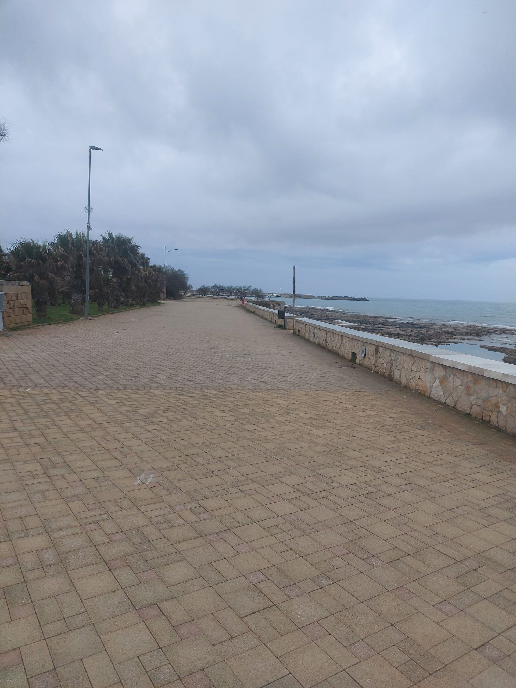

Spiagge del Salento
Guida Completa alla Costa Ionica da Santa Maria di Leuca a Torre San Giovanni
Benvenuti nella Costa Ionica del Basso Salento
Il tratto di costa ionica che va da Santa Maria di Leuca a Torre San Giovanni rappresenta uno dei litorali più belli e incontaminati d'Italia. In pochi chilometri si susseguono spiagge di sabbia finissima, acque cristalline color turchese, pinete mediterranee e località balneari autentiche che mantengono viva la tradizione marinara del Salento.
Questa guida vi accompagnerà alla scoperta delle località più suggestive del Salento: Torre Vado con la sua piscina naturale, Pescoluse con le famose "Maldive del Salento", Torre Pali con l'Isola della Fanciulla, Lido Marini immersa nella pineta, Marina di Felloniche tra dune e natura, Santa Maria di Leuca dove si incontrano due mari, Torre Mozza con il suo litorale naturale e Torre San Giovanni con porto e lungomare. Ogni località ha la sua unicità, ma tutte condividono mare limpido, panorami spettacolari e un'atmosfera autentica.
30 km di Costa
Spiagge ininterrotte tra Santa Maria di Leuca e Torre San Giovanni
Bandiera Blu
Acque premiate per qualità e pulizia
Family Friendly
Fondali bassi e sicuri per bambini
Perché Scegliere Questa Costa
A differenza della costa adriatica salentina, caratterizzata da scogliere e rocce, il versante ionico offre lunghe distese di sabbia dorata e finissima, perfette per chi cerca comfort e praticità in spiaggia. I fondali degradano dolcemente permettendo di camminare in acqua per decine di metri, rendendo queste spiagge ideali per bambini, anziani e chi non sa nuotare. Il mare, protetto dalle correnti, è quasi sempre calmo e le acque sono tra le più pulite e trasparenti del Mediterraneo.
Le Località Imperdibili del Salento
Scopri le caratteristiche uniche di ogni spiaggia per scegliere quella perfetta per te

Torre Vado
Morciano di Leuca è Porto Turistico
Marina pittoresca famosa per la sua piscina naturale, un'insenatura protetta da scogli dove l'acqua cristallina crea una sorta di piscina a cielo aperto. Porto turistico con barche da pesca e tradizione marinara autentica.

Torre Pali
Salve è Bandiera Blu
Località balneare premiata con Bandiera Blu per la qualità delle acque. Famosa per l'Isola della Fanciulla, piccolo isolotto roccioso raggiungibile a nuoto. Torre di avvistamento del XVI secolo ancora ben conservata.

Pescoluse
Salve è Maldive del Salento
Le famose "Maldive del Salento": 4 km di spiaggia con sabbia bianchissima finissima e mare turchese dai colori caraibici. Fondali bassissimi per decine di metri, perfetti per famiglie. La spiaggia più fotografata del Salento.

Lido Marini
Ugento è Pineta Mediterranea
Spiaggia tranquilla circondata da una splendida pineta mediterranea che offre ombra naturale e un'atmosfera rilassante. Ideale per chi cerca tranquillità e vuole alternare mare e passeggiate nella natura.

Marina di Felloniche
Patù è Baia Sabbiosa
Baia tranquilla tra Santa Maria di Leuca e Torre Vado, apprezzata per sabbia chiara, acqua limpida e fondali che degradano dolcemente. Ideale per famiglie e per chi cerca relax lontano dalle spiagge più affollate.
Santa Maria di Leuca
De Finibus Terrae è Capo di Leuca
Località iconica all'estremo sud del Salento, famosa per il faro monumentale, il santuario e le escursioni in barca verso le grotte marine. Punto perfetto per vivere tramonti e panorami tra Ionio e Adriatico.

Torre Mozza
Ugento è Torre Costiera
Spiaggia naturale con tratti sabbiosi e fondali limpidi, dominata dalla storica torre costiera. È una località tranquilla, ideale per giornate rilassanti tra mare cristallino e passeggiate sul litorale.

Torre San Giovanni
Ugento è Porto e Lungomare
Località vivace con porto turistico, lunghe spiagge sabbiose e lungomare attrezzato. Perfetta per chi cerca servizi, ristoranti, passeggiate serali e mare adatto anche alle famiglie.
Confronta le Spiagge
Trova la spiaggia perfetta per le tue esigenze confrontando caratteristiche e servizi
| Caratteristica | Torre Vado | Torre Pali | Pescoluse | Lido Marini | Marina di Felloniche | Santa Maria di Leuca | Torre Mozza | Torre San Giovanni |
|---|---|---|---|---|---|---|---|---|
| Tipo di Sabbia | Dorata fine | Dorata fine | Bianca finissima | Dorata fine | Sabbia chiara | Mista (sabbia/scoglio) | Dorata fine | Dorata fine |
| Fondali | Bassi e rocciosi | Bassi sabbiosi | Bassissimi sabbiosi | Bassi sabbiosi | Bassi sabbiosi | Medio-profondi | Bassi sabbiosi | Bassi sabbiosi |
| Colore Mare | Azzurro cristallino | Turchese chiaro | Turchese caraibico | Azzurro | Azzurro limpido | Blu intenso | Azzurro cristallino | Turchese chiaro |
| Affollamento | Medio | Medio | Alto (estate) | Basso | Basso | Medio | Medio | Medio-Alto |
| Per Famiglie | ||||||||
| Spiaggia Libera | ||||||||
| Stabilimenti | ||||||||
| Ristoranti | ||||||||
| Parcheggio | A pagamento | Gratuito/Pagamento | A pagamento | Gratuito/Pagamento | Gratuito/Pagamento | A pagamento | Gratuito/Pagamento | A pagamento |
| Caratteristica Unica | Piscina Naturale | Isola Fanciulla | Sabbia Bianca | Pineta | Baia Riparata | Faro e Grotte | Torre Costiera | Porto e Lungomare |
Mappa Interattiva
Esplora la posizione delle spiagge e pianifica il tuo itinerario
Distanze tra le Località
Torre Vado ? Pescoluse: 3 km (5 minuti in auto)
Pescoluse ? Torre Pali: 3 km (5 minuti in auto)
Torre Pali ? Lido Marini: 8 km (10 minuti in auto)
Torre Vado ? Torre Pali: 6 km (8 minuti in auto)
Torre Vado ? Lido Marini: 9 km (12 minuti in auto)
Torre Vado ? Marina di Felloniche: 4 km (6 minuti in auto)
Marina di Felloniche ? Santa Maria di Leuca: 3 km (5 minuti in auto)
Torre Vado ? Santa Maria di Leuca: 7 km (10 minuti in auto)
Lido Marini ? Marina di Felloniche: 12 km (16 minuti in auto)
Lido Marini ? Santa Maria di Leuca: 15 km (20 minuti in auto)
Torre Pali ? Torre Mozza: 6 km (9 minuti in auto)
Torre Mozza ? Torre San Giovanni: 6 km (10 minuti in auto)
Lido Marini ? Torre San Giovanni: 10 km (14 minuti in auto)
Torre Vado ? Torre San Giovanni: 18 km (25 minuti in auto)
Tutte le spiagge sono collegate dalla strada litoranea SP358, facilmente percorribile in auto, bici o scooter. È possibile visitare più spiagge nella stessa giornata!